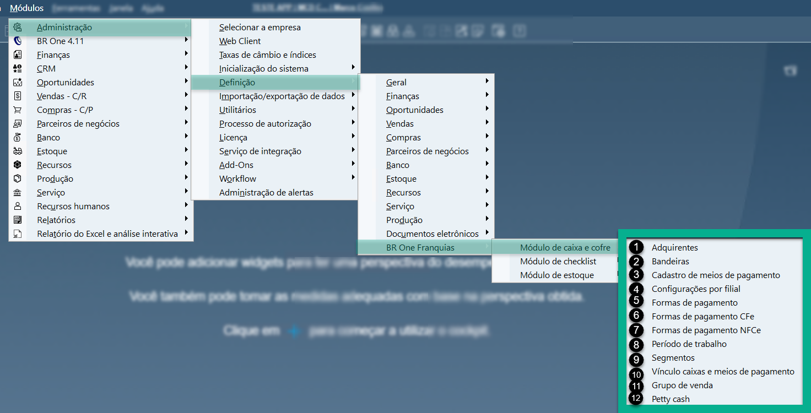
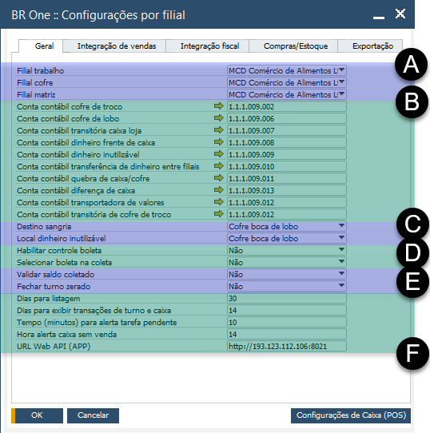
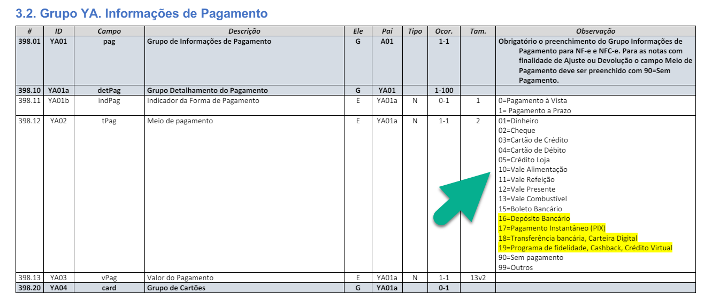
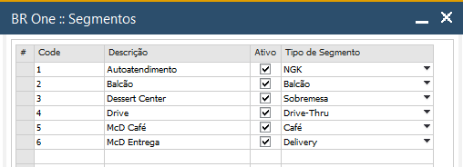
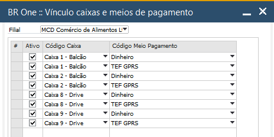
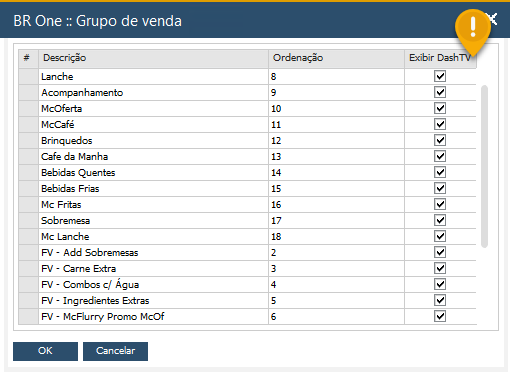

Introdução
O módulo de Caixa e Cofre está relacionado as movimentações de caixa, vendas, período de trabalho (turno), meios de pagamento, lançamentos de cofres (fundo de troco e Boca de Lobo), Petty Cash e Suprimento de Troco que serão lançados pela equipe de loja através do aplicativo BR One Franquias. Os lançamentos realizados são diretamente comunicados com o SAP efetuando os LCMs (Lançamentos Contábeis Manuais) e lançamentos financeiros em cada processo realizado pelo aplicativo.
IMPORTANTE: Todo lançamento contábil gera um LCM (Lançamento Contábil Manual). Esses lançamentos poderão ser realizados de forma automática (considerando os lançamentos do APP, NF, Contagens etc.) ou de forma manual através do caminho: Módulos > Finanças > Lançamento Contábil Manual (no SAP Business One).
As configurações do módulo Caixa e Cofre deverão ser realizadas no SAP através do seguinte caminho:
{kind=link}
Em cada etapa desde manual, falaremos sobre as configurações no SAP de acordo com os tópicos abaixo. Além disso, é importante verificar os impactos dos lançamentos do aplicativo no SAP.
Nas abas apresentadas para configurações do módulo Caixa e Cofre, temos as adquirentes (1), bandeiras (2) e cadastros de meio de pagamento (3) que são informações importantes para os lançamentos de vendas pelo aplicativo. Todos os tipos de recebimentos deverão ser previamente cadastrados para que estejam disponíveis a equipe de loja. As configurações deverão ser feitas inclusive para a modalidade de recebimento em dinheiro.
Em Configurações por Filial (4) serão definidas as parametrizações necessárias para que todos os lançamentos efetuamos no aplicativo sejam integrados ao SAP de forma correta. Com isso, nessa tela defina as filiais de trabalho, cofre e matriz (A), definição de contas contábeis (B) para lançamento automático considerando os processos realizados pelo aplicativo, destino da sangria e dinheiro inutilizado (C), controle de boleta (D), validações de saldos (E) e demais parametrizações em relação a tempo de exibição e comunicação via API (F). Há também outras configurações pertinentes para a execução correta do processo, como: Integração de vendas, integração fiscal e compras/estoque.
{kind=link}
As configurações de Formas de Pagamento (5), Formas de Pagamento CFe (6) e Formas de Pagamento NFCe (7) estão relacionados com as definições disponibilizadas pela SEFAZ em relação, no caso do McDonald’s, a emissão do cupom fiscal considerando os meios de pagamento disponíveis, vinculando com as formas de pagamento padrão cadastradas no SAP.
{kind=link}
Verifique se há atualizações em: https://www.nfe.fazenda.gov.br/portal/principal.aspx
Em Formas de Pagamento NFCe é feita a referência entre a código (A) de acordo com a tabela acima disponibilizada pela SEFAZ com a forma de pagamento padrão (B).
Em período de trabalho (8), defina os períodos do turno de trabalho, considerando os horários de início e término do diurno, noturno e madrugada, se houver.
As definições deverão ser realizadas por filial (A) (sendo loja ou quiosque), considerando as descrições para os turnos (B), horários de trabalho (C e D), limite de quebra de caixa (E), tipo de período (F) e se está ativo ou inativo (G).
Veja que nesta aba, temos o botão Tarefas (!). Por ele que serão configuradas as opções de tarefas de turno. Para mais informações, consulte o manual do módulo Tarefas de Turno.
Segmentos (9) estão relacionados aos tipos de vendas, como: Autoatendimento (NGK), balcão, Dessert Center (quiosque), Drive, McD Café e McD Entrega.
{kind=link}
Em vínculo de caixa e meios de pagamentos (10), deverão ser relacionados as opções de pagamento disponíveis por caixa. Exemplo: No caixa balcão 1, estão disponíveis os meios de pagamento: Dinheiro, TEF Crédito e TEF Débito. Considerando que o módulo Caixa e Cofre tem como objetivo e controle de lançamentos em cédulas, sendo que as conciliações em dinheiro não são realizadas pela conciliadora de cartões Atos Capital, priorize os meios de pagamentos para caixas que movimentam dinheiro.
{kind=link}
As opções de grupos de vendas (11) têm como objetivo agrupar os itens vendidos por tipo, para melhor visualizações de forma agrupada. São alguns tipos disponíveis: Lanche, Sobremesa, Acompanhamento, Mc Oferta, entre outros. (!) Consulte o módulo Dashboard TV para mais informações.
{kind=link}
Para o controle de pequenos gastos e eventuais despesas, utilize a função Petty Cash (12), configurando os possíveis lançamentos por tipo de despesa.
Analisando as telas de configurações no SAP e realizando as devidas parametrizações, seguiremos paras os módulos utilizados no APP.